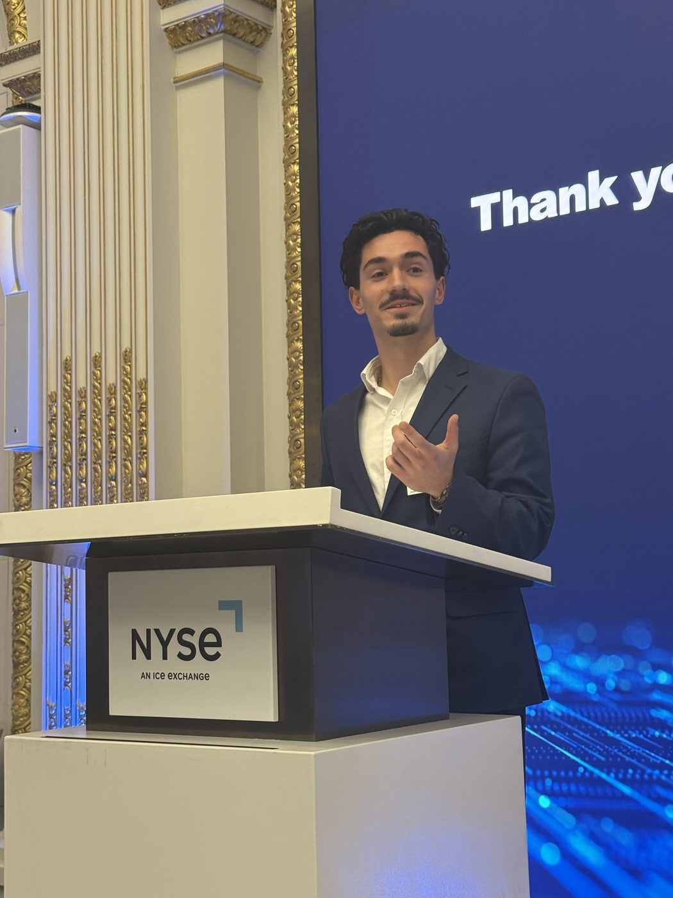
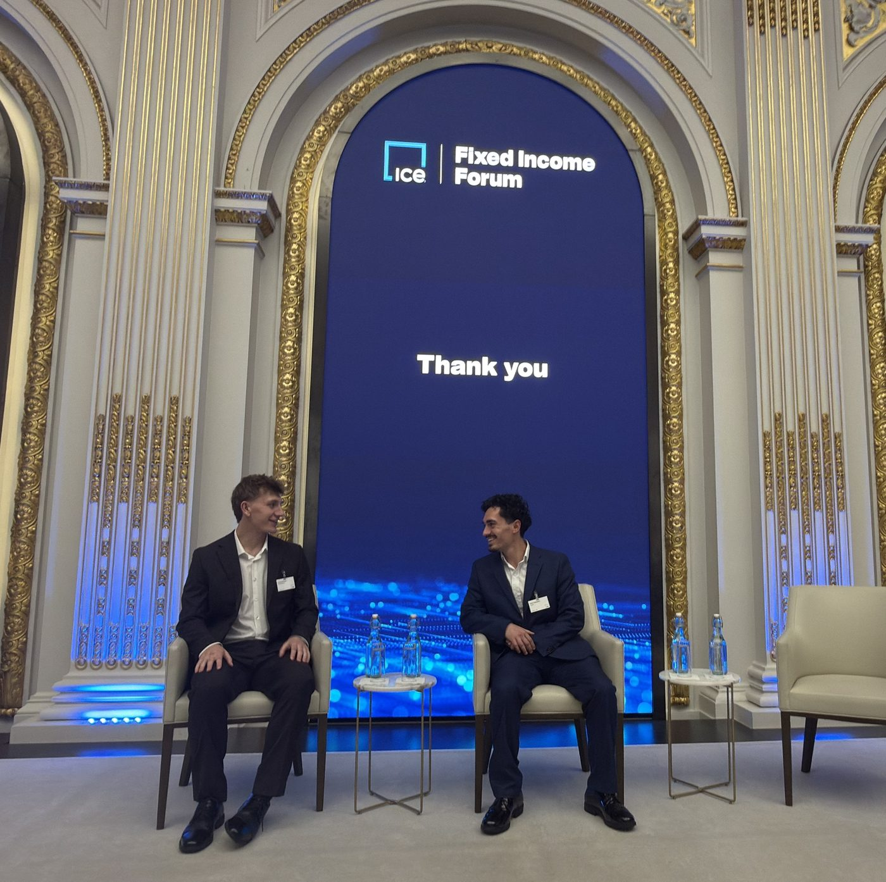
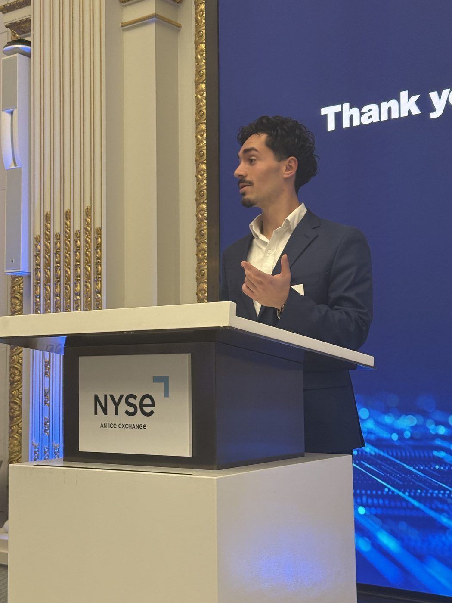

Role
Finsight.
Finsight is a fintech platform that tracks the primary bond market for bankers and investors. I was the person chasing the order books.
The job
The book chase
Most of my day was the book chase. Syndicate desks run the order book on every new bond deal, and nobody has to tell you what is in it. I called and messaged desks at 30 plus investment grade and high yield banks for book sizes as deals moved from initial price talk to guidance to launch, then cleaned up what came back and got it out to the bankers and investors on the platform before the next update hit.
Fifteen to twenty deals a day. Once you build the relationship you get the books faster, and that means our clients see what is happening sooner. That turned out to be the most useful skill I picked up: none of those bankers owed me anything.
High yield, then investment grade
Two desks, two different games
I started on the high yield side in the spring. Every deal there is a story about a company, its covenants, its call structure and where the money is going. It moves on risk sentiment and single name news.
Over the summer I moved to investment grade, where everything is speed and real time. Big frequent issuers, tight spreads, and the whole game is picking the right window. Watching both tapes every day is where it clicked.
Deals I covered
The ones I still bring up
- Alphabet's $25 billion offering, ten tranches out to 40 years, book topped around $115 billion. A company that had always funded itself from cash was borrowing to build data centers. I chased that book all day while guidance tightened.
- The Paramount Skydance exchange and tender offers. Consent solicitations, exchange offers into second lien notes, and cash tenders on the 2027 and 2028 notes. I wrote the wire headlines on the liability management flow, 25 plus deals across tenders, exchanges and consents. That work is why the tender tracker and the Skydance DCF exist.
- Relative value comps. I built screens on tenor, rating and spread to gauge new issue concession. Analysts used them on most deals and they went out to bankers and investors with the deal terms.
The tenor screens
Where does this print sit against every comparable deal since 2022?
The comps I kept were ten daily screens: the lowest spreads and the lowest coupons printed in the 3, 5, 7, 10 and 30 year, every investment grade deal back to 2022. Each one had a current week section, a current month section and a section for each year, with the issuer, sector, ratings, size, maturity, call, final book, coupon, price, yield and spread on every row. A separate check sheet held the prints that looked wrong until I had confirmed them.
I refreshed them every morning. When a banker asked how a new 5 year compared, the answer was one screen: here are the tightest 5 year prints this week, this month, this year and the three before it. That is what concession looks like in practice. It is one deal against a thousand others, not a formula.
The end of day tally
What priced, where it came from, and how far it moved
Every afternoon the day's investment grade prints went into one table: issuer, rating, size, tenor, final book, leads, initial price talk, where it priced, and the move from talk to print. Plus the identifiers so the platform could tie it to the bonds. The headline was the day's total volume. That table is where the numbers in the morning wire came from.
Volume against the Street
Did the month come in where the desks said it would?
I kept the running tally of issuance volume against the Street's estimates, by day, by week and by month, with deal counts, average tranche size, the average move from talk to print, average final book, attrition, new issue concession and how the deals traded by the end of the week. The daily sheet went back years, with holidays, zero days and Fed days marked. It is the table you look at when someone says August is dead and you want to know if that is true this year.
Backfilling the database
Checking 2019 Latin America deals one by one
The platform's history had gaps. I took a list of 2019 Latin American deals from an outside source, checked each one against what the platform had, marked the ones that were missing, the ones that looked wrong and the ones that needed a second look, and sent it back as a task list. Not glamorous. It is the kind of thing that makes a dataset worth paying for.
What I did on my own time
Treating it like the job, not the internship
- Reached out to the syndicate people I was pulling books from, at BBVA, Scotiabank and HSBC, to learn how they read demand and set concession. Three of those are still regular conversations.
- Taught myself the Bloomberg API in R and built the first version of the market dashboard so I could see the curve, DV01, credit spreads and new issue comps every morning before the desk did.
- Flew to New York in July on my own dime to work from the office for a few days and meet the team in person.
Still in the market
ICE Fixed Income Forum at the NYSE, October 2026
A month after the internship ended I was at the ICE Fixed Income Forum at the New York Stock Exchange, which is where these were taken.

On stage at the NYSE after the forum, October 21, 2026. 
The podium. 
The panel chairs, after the panel. 
Getting a feel for the room.